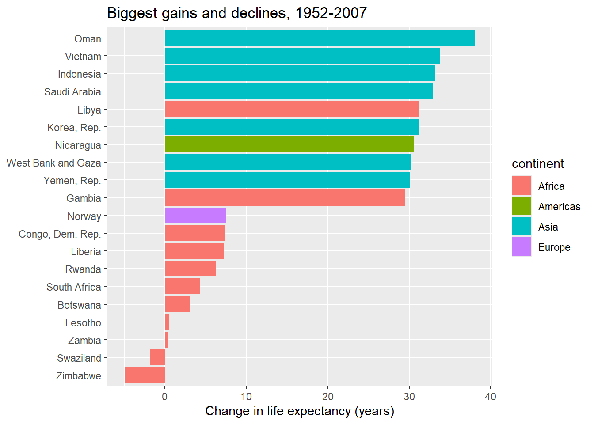

Fifty Years of Change: Life Expectancy Gains and Losses, 1952-2007
Author
Takura Nyamayaro
Published
September 25, 2026
Introduction
Data: Gapminder Foundation, via the gapminder R package, released under CC0. The dataset covers life expectancy, GDP per capita, and population for 142 countries from 1952 to 2007.
Life expectancy in most countries rose substantially between 1952 and 2007, one of the defining shifts of the twentieth century. But the gains were not even. This post asks a simple question: which countries gained the most over that half-century, and which gained the least or lost ground entirely?
# A tibble: 10 × 5
country continent y1952 y2007 gain
<fct> <fct> <dbl> <dbl> <dbl>
1 Oman Asia 37.6 75.6 38.1
2 Vietnam Asia 40.4 74.2 33.8
3 Indonesia Asia 37.5 70.6 33.2
4 Saudi Arabia Asia 39.9 72.8 32.9
5 Libya Africa 42.7 74.0 31.2
6 Korea, Rep. Asia 47.5 78.6 31.2
7 Nicaragua Americas 42.3 72.9 30.6
8 West Bank and Gaza Asia 43.2 73.4 30.3
9 Yemen, Rep. Asia 32.5 62.7 30.2
10 Gambia Africa 30 59.4 29.4
# A tibble: 20 × 5
country continent y1952 y2007 gain
<fct> <fct> <dbl> <dbl> <dbl>
1 Oman Asia 37.6 75.6 38.1
2 Vietnam Asia 40.4 74.2 33.8
3 Indonesia Asia 37.5 70.6 33.2
4 Saudi Arabia Asia 39.9 72.8 32.9
5 Libya Africa 42.7 74.0 31.2
6 Korea, Rep. Asia 47.5 78.6 31.2
7 Nicaragua Americas 42.3 72.9 30.6
8 West Bank and Gaza Asia 43.2 73.4 30.3
9 Yemen, Rep. Asia 32.5 62.7 30.2
10 Gambia Africa 30 59.4 29.4
11 Norway Europe 72.7 80.2 7.53
12 Congo, Dem. Rep. Africa 39.1 46.5 7.32
13 Liberia Africa 38.5 45.7 7.20
14 Rwanda Africa 40 46.2 6.24
15 South Africa Africa 45.0 49.3 4.33
16 Botswana Africa 47.6 50.7 3.11
17 Lesotho Africa 42.1 42.6 0.454
18 Zambia Africa 42.0 42.4 0.346
19 Swaziland Africa 41.4 39.6 -1.79
20 Zimbabwe Africa 48.5 43.5 -4.96
Figure: biggest gains and declines
ggplot(combined, aes(x =reorder(country, gain), y = gain, fill = continent)) +geom_col() +coord_flip() +labs(x =NULL,y ="Change in life expectancy (years)",title ="Biggest gains and declines, 1952-2007" )

Figure 1: Countries with the largest life expectancy gains and losses, 1952 to 2007.
Discussion
Over the half-century from 1952 to 2007, Oman recorded the largest increase in life expectancy at 38.1 years, followed by Vietnam, Indonesia, and Saudi Arabia, each adding over 30 years. Asian countries dominate the top of the list, accounting for seven of the ten largest gains; Libya and Gambia, both African, are the only non-Asian countries in that top ten.
The bottom ten tell a different story. Nine of the ten smallest gains belong to sub-Saharan African countries. The tenth, Norway, is a different kind of case: its 7.5-year gain looks modest only because it started in 1952 already near 73 years, close to the practical ceiling for the period, not because of stagnation. By contrast, Lesotho and Zambia gained less than six months over the entire fifty-five years from a much lower baseline, and Swaziland and Zimbabwe are the only two countries in the dataset to lose ground outright, falling by 1.8 and 5.0 years respectively.